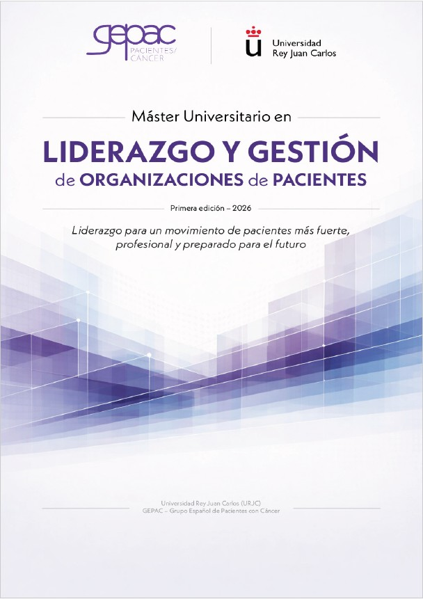

URJC y GEPAC lanzan un máster pionero en liderazgo y gestión de organizaciones de pacientes.
El liderazgo en organizaciones de pacientes da un paso histórico con el nuevo Máster Universitario impulsado por URJC y GEPAC El papel de las organizaciones de pacientes en el sistema sanitario ha evolucionado de forma significativa en los últimos años. Hoy participan en espacios de decisión, investigación, evaluación de tecnologías sanitarias, acceso a tratamientos y elaboración de políticas públicas. Sin embargo, esta creciente responsabilidad no ha ido acompañada, hasta ahora, de una formación universitaria específica orientada a profesionalizar su liderazgo y gestión. Con el objetivo de dar respuesta a esta necesidad, la Universidad Rey Juan Carlos (URJC), en colaboración con GEPAC, impulsa el Máster Universitario en Liderazgo y Gestión de Organizaciones de Pacientes, una formación pionera en España que comenzará el próximo 7 de abril. Se trata de un máster propio de universidad pública, con un enfoque riguroso, transversal y alineado con los principios de ética, transparencia y buen gobierno que exige el entorno sanitario actual. El programa nace con una doble vocación: fortalecer la profesionalización del movimiento asociativo y contribuir a un sistema sanitario más participativo, equitativo y centrado en las personas.
Una formación única en el panorama académico español Este máster destaca por su carácter transversal y por no estar vinculado a ninguna patología concreta. Está concebido para el conjunto del movimiento asociativo de pacientes y para profesionales que trabajan desde y con estas organizaciones. Con una duración de un curso académico (60 ECTS) y modalidad semipresencial, combina formación online —con clases síncronas y asíncronas— y sesiones presenciales intensivas en Madrid. Su estructura académica aborda, entre otros ámbitos: • Marco sanitario, legal e institucional del asociacionismo. • Gobernanza, liderazgo y gestión organizativa. • Gestión económica y sostenibilidad. • Comunicación institucional y narrativa del paciente. • Representación e incidencia política. • Innovación terapéutica e investigación. • Evaluación de impacto y rendición de cuentas. El programa incluye además un Trabajo Fin de Máster de carácter aplicado, orientado a trasladar el aprendizaje universitario a la realidad de las organizaciones de pacientes.
Dirigido a quienes lideran y transforman el sistema sanitario El máster está orientado a personas que desempeñan —o desean desempeñar— funciones de liderazgo, gestión y representación en organizaciones de pacientes, así como a profesionales del ámbito sanitario, social, jurídico o comunicativo que colaboran con estas entidades. No es una formación pensada para la observación teórica del sistema, sino para quienes desean intervenir en él con conocimiento, criterio y legitimidad.
Becas, equidad y primera promoción El programa cuenta con un sistema de becas orientado a facilitar el acceso y promover la equidad territorial y organizativa, asegurando que ninguna persona con capacidad y compromiso quede excluida por motivos económicos. Formar parte de esta primera promoción supone integrarse en una iniciativa pionera que busca fortalecer el liderazgo del movimiento asociativo y consolidar su papel como actor legítimo dentro del sistema sanitario.
Máster en liderazgo para organizaciones de pacientes URJC y GEPAC lanzan un máster pionero en liderazgo y gestión de organizaciones de pacientes. Contenido elaborado por GEPAC · Máster Universitario en Liderazgo y Gestión de Organizaciones de Pacientes https://www.gepac.es/